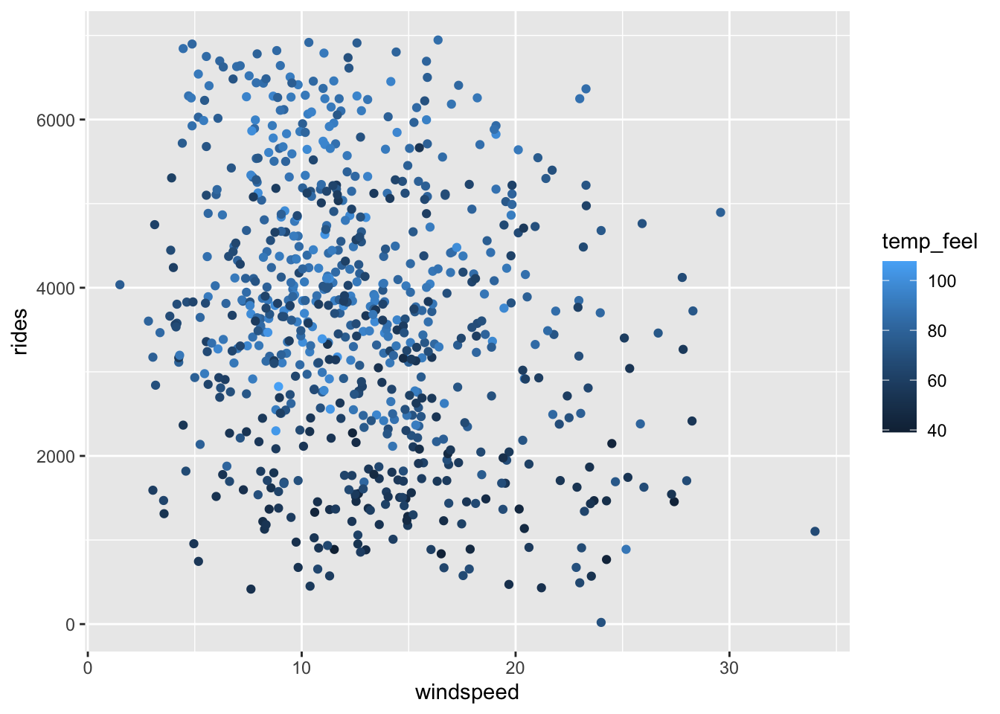

# Load packages & import data
library(readr)
library(ggplot2)
library(dplyr)
bikes <- read_csv("https://mac-stat.github.io/data/bikeshare.csv") %>%
rename(rides = riders_registered)Multiple regression principles
Notes and in-class exercises
Notes
- You can download a template file to work with here.
- File organization: Save this file in the “Activities” subfolder of your “STAT155” folder.
Learning goals
Working with multiple predictors in our plots and models can get complicated! There are no recipes for this process, but there are some guiding principles that assist in long-term retention, deeper understanding, and the ability to generalize our tools in new settings.
By the end of this lesson, you should be familiar with some general principles for…
- incorporating additional quantitative or categorical predictors in a visualization
- how additional quantitative or categorical predictors impact the physical representation of a model
- interpreting quantitative or categorical coefficients in a multiple regression model
Readings and videos
Before class you should have watched the following video:
Exercises
Let’s revisit the bikeshare data:
Our goal is to understand how / why registered ridership from day to day. To this end, we’ll build various multiple linear regression models of rides by different combinations of the possible predictors:
# Check out the data
head(bikes)Exercise 1: Review visualization
Let’s prepare to build a model of rides by windspeed (quantitative) and weekend status (categorical) by construcing a visualization of the relationship between these 3 variables.
Include linear smoothing lines so that we can see a representation of the regression model that we’ll build in the next exercise.
# Plot of rides vs windspeed & weekend
# HINT: Start with a plot of rides vs windspeedExercise 2: Review model
Let’s build the model:
bike_model_1 <- lm(rides ~ windspeed + weekend, data = bikes)
coef(summary(bike_model_1))The model formula thus is:
E[rides | windspeed, weekendTRUE] = 4738.38 - 63.97 * windspeed - 925.16 * weekendTRUE
This model formula is represented by 2 lines, one corresponding to weekends and the other to weekdays. Specify the corresponding sub-model formulas:
weekdays: rides = ___ - ___ windspeed
weekends: rides = ___ - ___ windspeed
Exercise 3: Review coefficient interpretation
The intercept coefficient, 4738.38, represents the intercept of the sub-model for weekdays, the reference category. What’s its contextual interpretation?
The
windspeedcoefficient, -63.97, represents the shared slope of the weekend and weekday sub-models. What’s its contextual interpretation?The
weekendTRUEcoefficient, -925.16, represents the change in intercept for the weekend vs weekday sub-model. What’s its contextual interpretation?
Exercise 4: 2 categorical predictors – visualization
Thus far, we’ve explored a couple examples of multiple regression models that have 2 predictors, 1 quantitative and 1 categorical.
So what happens when both predictors are categorical?!
To this end, let’s model rides by weekend status and season.
The below code plots rides vs season.
# rides vs season
bikes %>%
ggplot(aes(y = rides, x = season)) +
geom_boxplot()Modify this code to also include information about weekend. (Hint: Remember the visualization principle that additional categorical predictors require some sort of grouping mechanism / mechanism that distinguishes between the 2 groups.)
# rides vs season AND weekend
bikes %>%
ggplot(aes(y = rides, x = season, ___ = ___)) +
geom_boxplot()Exercise 5: follow-up
Describe (in words) the relationship of ridership with season and weekend status.
A model of
ridesbyseasonalone would be represented by only 4 expected outcomes, 1 for each season. Considering this and the plot above, how do you anticipate a model ofridesbyseasonandweekendstatus will be represented?- 2 lines, 1 for each weekend status
- 8 lines, 1 for each possible combination of season and weekend
- 2 expected outcomes, 1 for each weekend status
- 8 expected outcomes, 1 for each possible combination of season and weekend
Exercise 6: 2 categorical predictors – build the model
Let’s build the multiple regression model of rides vs season and weekend:
bike_model_2 <- lm(rides ~ weekend + season, bikes)
coef(summary(bike_model_2))Thus the model formula is
E[rides | weekend, season] = 4260.45 - 912.33 weekendTRUE - 116.38 seasonspring + 438.44 seasonsummer - 1719.06 seasonwinter
- Use this model to predict the ridership on the following days:
# a fall weekday
4260.45 - 912.33*___ - 116.38*___ + 438.44*___ - 1719.06*___
# a winter weekday
4260.45 - 912.33*___ - 116.38*___ + 438.44*___ - 1719.06*___
# a fall weekend day
4260.45 - 912.33*___ - 116.38*___ + 438.44*___ - 1719.06*___
# a winter weekend day
4260.45 - 912.33*___ - 116.38*___ + 438.44*___ - 1719.06*___- We only made 4 predictions here. How many possible predictions does this model produce? Is this consistent with your intuition in the previous exercise?
Exercise 7: 2 categorical predictors – interpret the model
Use your above predictions and visualization to fill in the below interpretations of the model coefficients.
Hint: What is the consequence of plugging in 0 or 1 for the different weekend and season categories?
Interpreting 4260: We expect there to be 4260 riders on (weekdays/weekends) during the (fall/spring/summer/winter).
Interpreting -912: In any season, we expect there to be 912 (more/fewer) riders on weekends than on ___.
Interpreting -1719: On both weekdays and weekends, we expect there to be 1719 (more/fewer) riders in winter than in ___.
Exercise 8: 2 quantitative predictors – visualization
Next, consider the relationship between rides and 2 quantitative predictors: windspeed and temp_feel.
Check out 2 plots of this relationship below.
These reflect the visualization principle that quantitative variables require some sort of numerical scaling mechanism – rides and windspeed get numerical axes, and temp_feel gets size and color scales.

Modify the code below to recreate these 2 plots.
# Left plot
bikes %>%
ggplot(aes(y = rides, x = windspeed, ___ = ___)) +
geom_point()
# Right plot
bikes %>%
ggplot(aes(y = rides, x = windspeed, ___ = ___)) +
geom_point()With some new code in the plotly (not ggplot2) package, we can also plot these 3 quantitative variables in 3D, each getting their own axis!
First, enter install.packages("plotly") in the console (not Rmd).
Then play around with this code:
library(plotly)
plot_ly(data = bikes,
z = ~rides, y = ~windspeed, x = ~temp_feel,
type = "scatter3d", mode = "markers", size = 0.5)Exercise 9: follow-up
Describe (in words) the relationship of ridership with windspeed & temperature.
A model of
ridesbywindspeedalone would be represented by 1 line. How do you anticipate a model ofridesbywindspeedandtemp_feelstatus will be represented? HINT: Think about the 3D scatterplot.
Exercise 10: 2 quantitative predictors – modeling
Let’s build the multiple regression model of rides vs windspeed and temp_feel:
bike_model_3 <- lm(rides ~ windspeed + temp_feel, bikes)
coef(summary(bike_model_3))Thus the model formula is
E[rides | windspeed, temp_feel] = -24.06 - 36.54 windspeed + 55.52 temp_feel
This is the formula of a plane, drawn here:

Interpret the intercept coefficient, -24.06, in context.
Interpret the
windspeedcoefficient, -36.54, in context. HINT: This is the slope of the red lines in the right plot, drawn at 3 arbitrary temperatures (40, 60, and 90 degrees).Interpret the
temp_feelcoefficient, 55.52, in context. HINT: This is the slope of the red lines in the left plot, drawn at 3 arbitrary wind speeds (5, 20, and 30 mph).
Exercise 11: Which is best?
We’ve now observed 3 different models of ridership, each having 2 predictors. The R-squared values of these models, along with those of the simple linear regression models with each predictor alone, are summarized below.
| model | predictors | R-squared |
|---|---|---|
bike_model_1 |
windspeed & weekend |
0.119 |
bike_model_2 |
weekend & season |
0.349 |
bike_model_3 |
windspeed & temp_feel |
0.310 |
bike_model_4 |
windspeed |
0.047 |
bike_model_5 |
temp_feel |
0.296 |
bike_model_6 |
weekend |
0.074 |
bike_model_7 |
season |
0.279 |
Which model does the best job of explaining the variability in ridership from day to day?
If you could only pick one predictor, which would it be?
What happens to R-squared when we add a second predictor to our model, and why does this make sense? For example, how does the R-squared for model 1 (with both windspeed and weekend) compare to those of model 4 (only windspeed) and model 6 (only weekend)?
Are 2 predictors always better than 1? Provide evidence and explain why this makes sense.
Exercise 12: Principles of interpretation
These exercises have revealed some principles behind interpreting model coefficients, summarized below.
Review and confirm that these make sense.
Principles of interpretation
Consider a multiple linear regression model:
\[E[y | x_1, x_2, ..., x_p] = \beta_0 + \beta_1 x_1 + \beta_2 x_2 + ... + \beta_p x_p\]
We can interpret the coefficients as follows:
\(\beta_0\) (“beta 0”) is the y-intercept. It describes the typical value of \(y\) when \(x_1, x_2,..., x_k\) are all 0, ie. when all quantitative predictors are set to 0 and the categorical predictors are set to their reference levels.
\(\beta_i\) (“beta i”) is the coefficient of \(x_i\).
- If \(x_i\) is quantitative, \(\beta_i\) describes the typical change in \(y\) per 1-unit increase in \(x_i\) while at a fixed set of the other \(x\).
- If \(x_i\) represents a category of a categorical variable, \(\beta_i\) describes the typical change in \(y\) when we move to this category from the reference category while at a fixed set of the other \(x\).
- If \(x_i\) is quantitative, \(\beta_i\) describes the typical change in \(y\) per 1-unit increase in \(x_i\) while at a fixed set of the other \(x\).
Extra practice
The following exercises provide extra practice. If you don’t get to these during class, you’re encouraged to try them outside class.
Exercise 13: Practice 1
Consider the relationship of rides vs weekend and weather_cat.
- Construct a visualization of this relationship.
- Construct a model of this relationship.
- Interpret the first 3 model coefficients.
Exercise 14: Practice 2
Consider the relationship of rides vs temp_feel and humidity.
- Construct a visualization of this relationship.
- Construct a model of this relationship.
- Interpret the first 3 model coefficients.
Exercise 15: Practice 3
Consider the relationship of rides vs temp_feel and weather_cat.
- Construct a visualization of this relationship.
- Construct a model of this relationship.
- Interpret the first 3 model coefficients.
Exercise 16: CHALLENGE
We’ve explored models with 2 predictors. What about 3 predictors?! Consider the relationship of rides vs temp_feel, humidity, AND weekend.
- Construct a visualization of this relationship.
- Construct a model of this relationship.
- Interpret each model coefficient.
- If you had to draw the shape of the model trend, what would it look like: a line, parallel lines, a plane, parallel planes?
Solutions
Exercise 1: Review visualization
bikes %>%
ggplot(aes(y = rides, x = windspeed, color = weekend)) +
geom_point() +
geom_smooth(method = "lm", se = FALSE)`geom_smooth()` using formula = 'y ~ x'Exercise 2: Review model
bike_model_1 <- lm(rides ~ windspeed + weekend, data = bikes)
coef(summary(bike_model_1)) Estimate Std. Error t value Pr(>|t|)
(Intercept) 4738.38053 147.53653 32.116659 1.208405e-141
windspeed -63.97072 10.45274 -6.119997 1.528443e-09
weekendTRUE -925.15701 119.86330 -7.718434 3.891082e-14weekdays: rides = 4738.38 - 63.97 windspeed
weekends: rides = 4738.38 - 63.97 windspeed - 925.16 = 3813.22 - 63.97 windspeed
Exercise 3: Review coefficient interpretation
On average, there are roughly 4738 riders on weekdays with 0 windspeed.
- On both weekends and weekdays, every 1 mph increase in windspeed is associated with 64 fewer riders on average.
- Holding day type fixed (weekend or weekday), every 1 mph increase in windspeed is associated with 64 fewer riders on average.
- At any windspeed, weekend days have an average of 925 fewer riders than weekdays.
- Holding windspeed fixed, weekend days have an average of 925 fewer riders than weekdays.
Exercise 4: 2 categorical predictors – visualization
bikes %>%
ggplot(aes(y = rides, x = season, fill = weekend)) +
geom_boxplot()Exercise 5: follow-up
In every season, ridership tends to be lower on weekends. Across weekend status, ridership tends to be highest in summer and lowest in winter.
8 expected outcomes
Exercise 6: 2 categorical predictors – build the model
bike_model_2 <- lm(rides ~ weekend + season, bikes)
coef(summary(bike_model_2)) Estimate Std. Error t value Pr(>|t|)
(Intercept) 4260.4492 99.16363 42.9638294 1.384994e-201
weekendTRUE -912.3324 103.23016 -8.8378473 7.298199e-18
seasonspring -116.3824 132.76018 -0.8766364 3.809741e-01
seasonsummer 438.4424 132.06413 3.3199205 9.454177e-04
seasonwinter -1719.0572 133.30505 -12.8956646 2.081758e-34# fall weekday:
4260.45 - 912.33*0 - 116.38*0 + 438.44*0 - 1719.06*0[1] 4260.45# winter weekday:
4260.45 - 912.33*0 - 116.38*0 + 438.44*0 - 1719.06*1[1] 2541.39# fall weekend:
4260.45 - 912.33*1 - 116.38*0 + 438.44*0 - 1719.06*0[1] 3348.12# winter weekend:
4260.45 - 912.33*1 - 116.38*0 + 438.44*0 - 1719.06*1[1] 1629.06- 8: 2 weekend categories * 4 season categories
Exercise 7: 2 categorical predictors – interpret the model
- On average there are 4260 riders on weekdays during the fall.
- In any season, there are on oaverage 912 fewer riders on weekends than on weekdays.
- Holding season constant (for a fixed season), there are on average 912 fewer riders on weekends than on weekdays.
- On both weekdays and weekends, there are on average 1719 fewer riders in winter than in fall.
- Holding day type constant (weekday vs. weekend), there are on average 1719 fewer riders in winter than in fall.
Exercise 8: 2 quantitative predictors – visualization
bikes %>%
ggplot(aes(y = rides, x = windspeed, size = temp_feel)) +
geom_point() bikes %>%
ggplot(aes(y = rides, x = windspeed, color = temp_feel)) +
geom_point() 
library(plotly)
plot_ly(data = bikes,
z = ~rides, y = ~windspeed, x = ~temp_feel,
type = "scatter3d", mode = "markers", size = 0.5)Exercise 9: follow-up
Ridership tends to increase with temperature (no matter the windspeed) and decrease with windspeed (no matter the temperature).
Exercise 10: 2 quantitative predictors – modeling
bike_model_3 <- lm(rides ~ windspeed + temp_feel, bikes)
coef(summary(bike_model_3)) Estimate Std. Error t value Pr(>|t|)
(Intercept) -24.06464 299.303032 -0.08040225 9.359394e-01
windspeed -36.54372 9.408116 -3.88427585 1.119805e-04
temp_feel 55.51648 3.330739 16.66791759 4.436963e-53-24.06 = typical ridership on days with 0 windspeed and a 0 degree temperature. (This doesn’t make contextual sense, but indicates where the plane “lives” in space!)
- No matter the temperature, every 1 mph increase in windspeed is associated with an average of 37 fewer riders.
- Holding temperature constant, every 1 mph increase in windspeed is associated with an average of 37 fewer riders.
- No matter the windspeed, every 1 degree Fahrenheit increase in temperature is associated with an average of 56 more riders.
- Holding windspeed constant, every 1 degree Fahrenheit increase in temperature is associated with an average of 56 more riders.
Exercise 11: Which is best?
- model 2
- temperature
- R-squared increases (our model is stronger when we include another predictor)
- nope. model 1 (with windspeed and weekend) has a lower R-squared than model 5 (with only temperature)
Exercise 13: Practice 1
bikes %>%
ggplot(aes(y = rides, x = weekend, fill = weather_cat)) +
geom_boxplot()new_model_1 <- lm(rides ~ weekend + weather_cat, bikes)
coef(summary(new_model_1)) Estimate Std. Error t value Pr(>|t|)
(Intercept) 4211.8741 75.54724 55.751529 9.461947e-265
weekendTRUE -982.2106 117.24719 -8.377264 2.786301e-16
weather_catcateg2 -608.8640 113.00211 -5.388077 9.628947e-08
weather_catcateg3 -2360.2049 319.71640 -7.382183 4.270163e-13The average ridership on a weekday with nice weather (categ1) is 4212 rides.
On days with the same weather (holding weather category constant), the average ridership on a weekend is 982 rides less than on weekdays.
On days of the same type (weekend vs weekday) (holding day type constant), the average ridership when the weather is “dreary” (categ2) is 609 rides less than when the weather is nice.
Exercise 14: Practice 2
ggplot(bikes, aes(y = rides, x = temp_feel, color = humidity)) +
geom_point()new_model_2 <- lm(rides ~ temp_feel + humidity, bikes)
coef(summary(new_model_2)) Estimate Std. Error t value Pr(>|t|)
(Intercept) 315.83704 303.777334 1.039699 2.988249e-01
temp_feel 60.43316 3.272315 18.468015 9.451345e-63
humidity -1868.99356 336.963661 -5.546573 4.078901e-08It doesn’t really make sense to interpret the intercept – we didn’t see any days that were 0 degrees with 0 humidity.
On days with the same humidity (holding humidity constant), each 1 degree increase in temperature is associated with a decrease in 60 rides on average.
On days with the same temperature (holding temperature constant), each 1 unit increase in humidity (which corresponds to a change from 0 to 100 percent!) is associated with a decrease of 1867 rides on average. On a more sensible scale, a 10% increase in humidity is linked with an average of 1867 * 0.1 = 187 fewer rides.
Exercise 15: Practice 3
new_model_3 <- lm(rides ~ temp_feel + weather_cat, bikes)
coef(summary(new_model_3)) Estimate Std. Error t value Pr(>|t|)
(Intercept) -288.68840 251.264383 -1.148943 2.509574e-01
temp_feel 55.30133 3.215495 17.198387 7.082670e-56
weather_catcateg2 -386.42241 100.187725 -3.856984 1.249775e-04
weather_catcateg3 -1919.01375 283.022420 -6.780430 2.481218e-11bikes %>%
ggplot(aes(y = rides, x = temp_feel, color = weather_cat)) +
geom_point() +
geom_line(aes(y = new_model_3$fitted.values), linewidth = 1.5)It doesn’t really make sense to interpret the intercept – we didn’t see any days that were 0 degrees.
On days with the same weather (holding weather category constant), every 1 degree increase in temperature is associated with an average increase of 55 rides.
On days with the same temperature (holding temperature constant), average ridership is 386 rides lower on a dreary weather day (categ2) than a nice weather day (categ1).
Exercise 16: CHALLENGE
bikes %>%
ggplot(aes(y = rides, x = temp_feel, color = weekend, size = humidity)) +
geom_point()new_model_4 <- lm(rides ~ temp_feel + humidity + weekend, bikes)
coef(summary(new_model_4)) Estimate Std. Error t value Pr(>|t|)
(Intercept) 668.60236 292.181063 2.288315 2.240530e-02
temp_feel 59.36751 3.119256 19.032585 7.626695e-66
humidity -1906.43437 320.982938 -5.939364 4.433789e-09
weekendTRUE -869.05771 100.057822 -8.685555 2.471050e-17It doesn’t really make sense to interpret the intercept – we didn’t see any days that were 0 degrees.
On days with the same humidity and time of week (holding humidity and day type constant), each 1 degree increase in temperature is associated with an increase of 59 rides on average.
On days with the same temperature and time of week (holding temperature and day type constant), each 0.1 point increase (10%) in humidity levels is associated with 1906*0.1 = 190.6 rides fewer rides on average.
On days with the same temperature and humidity (holding temperature and humidity constant), average ridership is 869 rides lower on weekends than on weekdays.
This model would look like 2 parallel planes, one for weekends and one for weekdays! Why? rides vs temp_feel (quant) would be a line. Adding in humidity (quant) would turn the model into a plane. Adding in weekend (cat) would split this one plane into two unique planes, one for each weekend category!